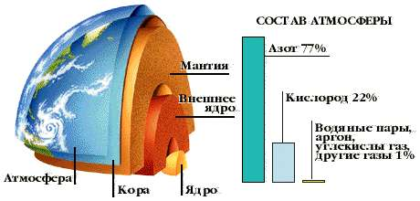

Единственность Земли во ВселеннойНаука и техника наших днейЛилия Шукаева: "Летающие тарелки", они же НЛО начали навещать нас почти сразу после Второй Мировой Войны, но их визиты никакой научной гипотезы не породили. Среди тех, кого пришельцы ненадолго утаскивали к себе на корабль, не было ни одного ученого. Пришельцы питают слабость к домохозяйкам. Гипотеза начала вырисовываться в самом начале 60-х годов, и притом как бы независимо от летающих тарелок и даже от научно-фантастических романов, которых к тому времени расплодилось великое множество. Автором гипотезы был молодой астроном Фрэнк Дрэйк, работавший в федеральной обсерватории в Западной Вирджинии. Первым из астрономов он прочесал радиотелескопом все небо в поисках слабых сигналов, посылаемых "братьями по разуму" Тогда же и появилось это нелепое выражение - "братья по разуму", в котором самонадеянность успешно соперничала с отсутствием логики. Кто его изобрел - неизвестно. Через год Дрейк выступил перед компанией таких же, как он, энтузиастов, мечтавших о космических контактах, с гипотезой, которая получила название "уравнение Дрейка". В этом "уравнении" содержались догадки о темпах формирования звезд и планет, о количестве планет, на которых может возникнуть жизнь, о сроках существования технологических цивилизаций. Из "уравнения" получалось, что в нашей галактике, Млечном Пути, процветает около 10 тысяч цивилизаций, способных к межзвездным контактам. Среди энтузиастов был дерзкий молодой человек по имени Карл Саган, сделавший впоследствии несколько заметных открытий в астрономии, но прославившийся еще и как популяризатор науки, а также борец за предотвращение ядерной войны. Саган горячо принял идеи Дрейка, но немного погодя решил внести в них поправку. Не 10 тысяч, а миллион миров в нашей галактике! А так как во Вселенной сотни миллионов галактик, то оценив общее количество миров в 10 триллионов, мы не ошибемся. Как должно быть, порадовалась такому обороту дела душа Джордано Бруно! Ведь неукротимого философа сожгли на костре ровно 400 лет тому назад вовсе не за распространение взглядов Коперника, как думают многие, а за учение о множественности миров. Да и какой множественности! Джордано считал, что Вселенная бесконечна, а следовательно и количество миров в ней тоже бесконечно. Всем ересям ересь! В ХХ веке, правда, выяснилось, что Вселенная не бесконечна, значит, не бесконечно и число миров в ней. Но 10 триллионов тоже не пустяк. Есть чем утешиться мятущейся душе. А тут еще астрономы объявляют, что в далеких звездных системах они открыли несколько десятков планет, напоминающих планеты Солнечной Системы. Там надо полагать, и обитают братья по разуму. Просто непонятно, почему они помалкивают.
 И вдруг, как гром среди ясного неба недавно вышедшая книга "Земля - редкостная планета". Написали ее двое ученых, Питер Уорд и Дональд Браунли, а выпустило известное немецкое издательство Шпрингера. Уорд - палеонтолог из Университета Вашингтона в Сиэттле, специалист по массовому вымиранию животных, о чем он и рассказывает в своей предыдущей книге "Зов далеких мамонтов", изданной три года назад тем же. В рамках НАСА он возглавляет сейчас исследовательскую Шпрингером. Браунли - астроном, тоже из Университета Вашингтона группы, участвующую в подготовке полета автоматической станции, которая должна собрать образцы межпланетной и межзвездной пыли.Земля наша - уникальное местечко в Млечном Пути, утверждают в своей книге Уорд и Браунли. Прямо райский уголок. Солнце - не обыкновенная звезда, как принято думать, а уникальное светило, как бы специально изобретенное для поддержания жизни на Земле. Ничего подобного вы нигде во Вселенной не найдете. Где-нибудь, конечно, может существовать жизнь, но дальше микробов она не пойдет. Для развитой цивилизации нужны только такие условия, как у нас. Так что, скорее всего, мы во Вселенной одни. Видели бы вы, как ополчились на Уорда и Браунли многочисленные последователи Дрейка и Саган! К счастью, у наших автором нашлись и сторонники, и первый из них = Джэффри Мэрси из Калифорнийского университета в Беркли, главный открыватель далеких планет. "Я и сам подумывал написать нечто в этом роде, да так и не собрался. И хорошо, потому что я бы сделал хуже. Честь и хвала авторам сенсационной книги! Нечасто в науке и литературе гладят кого-нибудь против шерсти, у Браунли с Уордом это получилось блестяще". Палеонтолог Уорд рассказывает, что толчком к его размышлениям послужил всем известный факт массовой гибели многих животных, в том числе динозавров, в результате падения гигантского метеорита. Было это 65 миллионов лет назад, и если не считать гораздо менее мощного Тунгусского метеорита, ничего подобного пока не повторилось. А ведь по всем расчетам такие катастрофы должны случаться на раз в 65 миллионов лет (возьмем эту цифру условно), а в 10 тысяч раз чаще. Почему этого не происходит? Спасает нас Юпитер, самая большая планета Солнечной системы. Своей массой он притягивает всех опасных для нас космических странников и поглощает их без остатка. Это верный страж Земли. Среди недавно открытых планет, тоже попадаются гиганты вроде Юпитера, продолжает Уорд. Но орбиты у них в большинстве своем не эллиптические, как в Солнечной системе, а эксцентрические, отчего они не защищают меньшие планеты, а только вносят в их существование деструктивный хаос. В общем, в отличие от нашего Юпитера, все тамошние никуда не годятся. Но даже если бы орбиты этих гигантов были устойчивыми, их защитный эффект скрадывался бы другими, неподходящими для жизни факторами. Мы живем на окраине Млечного Пути, и Слава Богу, потому что чем ближе как центру галактики, тем популяция звезд становится все плотнее и плотнее, звезды часто проплывают довольно близко друг к дружке, и на их планеты обрушиваются ливни комет. Никакой Юпитер их не задержит, и жизнь там едва возникнув, погибнет под нескончаемыми ледяными бомбами. А убийственное рентгеновское излучение, а ионизирующая радиация! Нет, в центрах галактик даже микробы и то вряд ли бы выжили. Ну хорошо, а на окраинах? На окраинах тоже неважно с условиями для жизни: мало тяжелых элементов - железа, кремния, магния. Чаще всего они образуются при взрывах Сверхновых, но на окраинах галактик эти взрывы очень редки. Нам землянам, повезло, потому что на заре образования Солнечной системы рядом с ней как раз и взорвалась Сверхновая, и теперь наша планета, изобилует тяжелыми и сверхтяжелыми элементам, без которой никакой цивилизации не построишь. Без них даже не получится подходящей для жизни вообще планеты, так как не возникнет той силы тяжести, которая удержит о испарения атмосферу и моря, а также сформирует тектонические политы. Медленное же движение этих плит, исполинских частей земной коры - ключевое условие для развития сложной жизни. Благодаря этому движению рождаются разнообразные виды земной поверхности, на которых появляются и расцветают столь же разнообразные формы жизни. Движение плит способствует сохранению температурного режима планеты и состава ее атмосферы. Просто поражаешься сочетанию благоприятных для жизни условия, которыми может похвастаться Земля, говорит Браунли. Это и удачная орбита, которая пролегает на таком расстоянии от солнца, чтобы почти все воды земли оставались жидкими, а не превратились в пар или лед. Это и присутствие достаточно большой и плотной Луны, находящейся к тому же на таком расстоянии, чтобы сводить к минимум все колебания Земли, благодаря чему стабилизируется климат. Это и изобилие углерода - необходимейшего элемента жизни, но изобилие, не превращающее пока что в Землю в парник, подобный Венере: Перечислять можно до бесконечности, что и делают в своей книге Уорд и Браунли. Все о чем пишут авторы книги, они называют гипотезой, которая вполне поддается проверке. Они считают что со временем новые телескопы позволят нам досконально исследовать далекие планеты, их орбиты, их окружение, их состав, посмотреть, нет ли у них защитной озоновой оболочки, которая может спасти зарождающуюся жизнь. Они соглашаются, что жизнь, разумеется, в микроскопических формах, может обнаружиться на лунах Юпитера - Европе и Ганимеде, и на спутнике Сатурна Титане. Они даже допускают правомерность ожидания радиосигналов от внеземных цивилизаций, хотя и убеждены, что их не дождешься. Тем не менее, охотники за этим сигналами, чья деятельность обозначается аббревиатурой SETI ( от английских слов "исследование внеземного разума"), увидели в книге Уорда и Браунли серьезную угрозу. Они уже ухлопали на поиски сигналов 100 миллионов долларов и теперь боятся, что филантропам, которые их поддерживают. Это может надоесть. Фрэнк Дрейк, создатель "уравнений Дрейка" с недавних пор президент института SETI, расположенного в Калифорнии, считает, что Уорд и Браунли не учитывают, что жизнь может приспособиться к различным условиям. Они ставят ее чересчур жесткие рамки, в полную зависимость от внешних условий. Книга слишком пессимистична, замечает Дрейк. Насчет жестких рамок авторы согласны с Дрейком. А насчет пессимизма нет. Неизвестно, чего бы можно было ожидать от "братьев по разуму". Может быть, обмена студентами и рок-группами, а может, страшной войны и поголовного рабства. Лучше уж космическое одиночество, чем непредсказуемые сюрпризы. Да и осознание того, что мы одни должно укрепит нашу мораль и повысить ответственность за судьбы земли. Александр Сиротин: В последние годы климатологи пришли к выводу, что за 10 тысяч лет, минувших после последнего Ледникового периода, наша планета переживала гораздо более длительные засухи с гораздо более разрушительными последствиями, чем все, что человечество пережило за последние 150 лет. Именно засухи, считают ученые, послужили основной причиной исчезновения ряда древних цивилизаций. По данным недавних исследований, о которых сообщил журнал "Нейче" - "Природа" в течение последнего тысячелетия в экваториальной части Восточной Африки, например, периоды засухи, исчисляющиеся десятилетиями становились все продолжительнее, температура воздуха поднималась все выше, а приходившие на смену засухам сезоны дождей становились все короче. В историю ХХ столетия вошли две наиболее сильные засухи - это засуха "Даст Боул" ("Пыльная Буря"), охватившая с 1933-го года по 1939-й обширные районы США и затронувшая штаты Канзас, Колорадо, Новая Мексика, Оклахома и Техас, и засуха 70-х годов в Африке. В древние же времена, если верить ученым преданиям, на которой опираются серьезные исследователи, засушливые периоды длились иногда до 80 лет, а вызванный засухой голод опустошал землю и вызывал переселения народов. По мнению профессора Миннесотского и Бельгийского университетов Дирка Версхюрена и его коллег Кэтлин Лейрд и Брайена Камминга из Королевского университета в Кенсингтоне, Онтарио, Канада, с течением времени засухи становятся не только продолжительнее, но и чаще. Поэтому весьма велика вероятность, что новый период опустошительных многолетних засух придет, например, в тропическую Африку в ближайшие 50-100 лет. При этом надо учитывать, что бедствие обрушится на континент, население которого только за последние 25 лет удвоилось, а использование воды значительно возросло. "Мы должны ожидать, что катастрофическая засуха придет в эти края рано или поздно, и мы обязаны начать подготовку к бедствию как можно скорее. Будущая засуха в Африке может уничтожить урожаи зерновых, овощей и фруктов, и неурожайные годы могут длиться 10-15 лет подряд", - сказал Дирк Версхюрен, возглавивший исследования, проводимый группой ученых-климатологов, геологов и историков. Длительные, многолетние засухи оказывали колоссальное влияние на жизнь всего человечества. Исследователи связывают, например, коллапс первой в мире великой империи аккадов в Месопотамии с засухой, начавшейся приблизительно 4200 лет назад и длившейся, в общем, около 300 лет. Именно засуха, вероятнее всего, привела к гибели в Южной Америке цивилизаций, предшествовавших инкам, и в Центральной Америке цивилизации майя. По данным проведенного исследования в последние 3500 лет под влиянием засушливых периодов формируется район нынешней Калифорнии. В древности засухи здесь продолжались, не считая, небольших перерывов, чуть ли не 200 лет. К счастью, в наше время, калифорнийский климат, несмотря на кратковременные засушливые сезоны, сопровождающиеся, как правило, лесными пожарами, относительно влажный. Как выяснили ученые, исследования которых финансировались американским правительством, такие суровые засухи как "Даст Боул" в 30-х годах в США в течение последних 300-400 лет случались 1-2 раза в столетие. А более катастрофические и длительные засухи в давнем прошлом периодически превращали огромные плодороднейшие районы планеты в пустыни вроде Сахары. К такому заключению ученые пришли на основе сопоставлений, гипотез и косвенных данных, поскольку колебаний климата и перемена погоды стали планомерно измеряться по всему миру только с середины 19-го века. Профессор Версхюрен и два его ассистента искали ответ на вопрос о его количестве и продолжительности засух в древние времена в восточных районах Экваториальной Африки, исследуя донные осадки в озере Наиваша в Кении. Веками мелководное озеро накапливало на дне образцы того, что несли в озеро окрестные воды. В центре озера - глубокая впадина, образованная краем древнего вулкана. Донные осадки, привносимые потоками из окрестностей, оседали в этой впадине и как бы консервировались - ничто не нарушало их покой. Профессор Версхюрен и его коллеги извлекли 6-метровую сердцевину из наиболее защищенной части донных отложений. Их пласты сохранялись там нетронутыми на протяжении 1100 лет. Ученые подвергли извлеченные слои анализу на влажность и засушливость: проверили разные типы почвы и водорослей. Причем, одни виды водорослей лучше себя чувствовали в нижних, более соленых водах, другие в верхних более пресных. Мошки и другие мельчайшие насекомые тоже очень чувствительны к содержанию соли. Исследования позволили ученым восстановить климатическую историю района. Параллельно проведенные серии тестов показали одинаковый результат: За последнее тысячелетие в этом районе Африки с равной периодичностью сменялись засушливые и влажные периоды. Из последних засух самой сильной была засуха в 70-х годах 19 века, как раз накануне европейской колонизации региона. А до этого страшная засуха поразила эту часть континента в конце 18-го - начале 19-го века. Обе эти засухи были гораздо продолжительнее и страшнее, чем "Даст Боул" в 30-х и "Сахел" в 70-х годах ХХ века, грозившие голодом миллионам людей. С другой стороны объем осадков и периоды дождей, как обнаружили ученые были намного существеннее в 17-м и начале 18-го века, чем в наше время. Примечательно, что периоды повышенной влажности в Африке совпали по времени с долгосрочным похолоданием в Европе, получившем даже название "Малого ледникового периода". Это похолодание длилось в целом почти 5 веков и охватило многие районы Северного полушария планеты. А наиболее засушливые периоды в Африке совпали с периодами потепления в Европе, продолжавшимися с 1000-го года по 1270-й. Практический вопрос, возникший в результате исследований профессора Версхюрена - это план подготовки к будущим сверхзасухам в Африке, где жизнь зависит в основном, от сельского хозяйства, которое не может существовать без достаточного количества воды. "Эти страны с развивающейся сельхозэкономикой делают все возможное, чтобы прокормить мое население. Но делается это, в основном, за счет эксплуатации водных ресурсов, - говорит профессор Версхюрен. - В большинстве случаев происходит расточительный перерасход запасов воды". Один из путей подготовки к надвигающейся катастрофе профессор видит в переключении сельского хозяйства на засухоустойчивые культуры. Другой путь - снижение зависимости от ирригации, потребляющей большое количество воды. Далеко идущий урок, который можно извлечь из результатов исследований профессора Версхюрена и его коллег, состоит в том, что независимо от воздействия человеческой деятельности на климат планеты существуют естественные природные климатические колебания сопровождаемые выпадением разной длительности осадков. И эти естественные климатические перемены могут, практически, нейтрализовать и даже свести почти к нулю влияние глобального потепления, вызванного промышленной эмиссией, то есть выбросами в атмосферу промышленных газов типа углекислого. Принято считать, что средняя те������пература на поверхности Земли повышается. и по мнению большинства ученых-климатологов, поднимется на 2,2 градуса Цельсия уже к 2100-му году, если только не удастся снизить количество выбрасываемых в атмосферу загрязняющих промышленных газов. Но тогда, как основное внимание в спорах о глобальном потеплении сосредоточено на температуре воздуха. Ряд ученых. В том числе и профессор Версхюрен, считают, что влияние потепления на объем осадков гораздо важнее. "Человечество намного больше зависит от сокращения или недостаточного пополнения водных ресурсов, чем от изменения температуры воздуха2, - говорит Фрэнк Олдфилд, директор международного проекта Глобальных перемен в Берне, в Швейцарии, автор комментария к статье Версхюрена в журнале "Нейче". Потепление в атмосфере приводит к дополнительным испарениям воды с поверхности земли. Это, с одной стороны, влечет за собой более обильные дожди, а с другой - более жестокие засухи. Но точно предсказывать, где и когда будет дождей больше, чем обычно, а где и когда меньше обычного, никто пока не умеет. "В любом случае, - считает профессор Версхюрен, - глобальное потепление окажет меньшее влияние на выпадение осадков, чем естественные , природные колебания". Теоретически потепление климата, вызванное человеческой деятельностью, может и усугубить засухи в Африке, и смягчить их. Но даже если потепление вызовет более обильные осадки, смягчив этим на короткое время засухи, проблема не будет решена. Человечество пока не в состоянии коренным образом менять климат планеты себе во вред или на пользу. Парниковый эффект, считает группа профессора Версхюрена, не имеет решающего значения по сравнению с климатическими колебаниями природного происхождения. Евгений Муслин: Врачи-хирурги получат в ближайшее время возможность детально отрабатывать элементы сложных и тонких операций, не дотрагиваясь и пальцем до своих пациентов. Они воспользуются системой на основе виртуальной реальности, позволяющей воспроизводить с мельчайшими подробностями и в любом масштабе объемные изображения человеческого организма. Такая система сейчас разрабатывается сотрудниками Австралийского центра высших компьютерных исследований. Надев стереоскопические очки, хирург будет манипулировать скальпелем, одновременно поддерживаемым кибер-рукой, имитирующей сопротивление тканей режущего усилию. Это позволит ему очень реалистически почувствовать, что происходит в процессе настоящей операции. На недавней экспериментальной демонстрации виртуальной системы в Австралийском хирургическом колледже, хирурги могли, например, почувствовать, как шприц прокалывает воображаемую кожу и вену больного и даже увидеть, как он наполняется кровью. Непрерывно измеряя усилия, прилагаемые к скальпелю, а также направления резания, гипотетические повреждения тканей и направления резания, гипотетические повреждения тканей и другие параметры, виртуальная система позволит объективно оценивать мастерство хирурга и достигаемый им прогресс. Такие системы пригодятся не только для тренировки молодых врачей, но и помогут быстрее внедрять в широкую практику новые операции, только что разработанные крупнейшими специалистами. Медики-исследователи из Флоридского университета сделали важный шаг на пути к полному излечивания юношеского диабета. Они использовали так называемые стволовые клетки, которым еще только предстоит развиться в специализированные клетки, для стимулирования синтеза инсулина у мышей. От юношеского диабета страдает примерно 5 процентов людей. Он возникает из-за того, что поджелудочная железа вырабатывает недостаточно инсулина, и его не хватает для усвоения организмом глюкозы. А это происходит, в свою очередь, из-за порока иммунной системы, разрушающей инсулин-производящие клетки этой железы. В течение двух десятилетий исследователи безуспешно пытались бороться с болезнью, совершенствуя методы пересадки таких клеток. Но этих клеток всегда катастрофически не хватало. И вот сейчас группе исследователей под руководством профессора-иммунолога Аммона Пека удалось найти метод выращивания любых количество дефицитных клеток и найти простой метод их имплантирования, не требующий сложных хирургических процедур. Пока опыты проводились на мышах, но в ближайшем будущем их перенесут на обезьян, а затем и на людей. Конечно, перед этим придется преодолеть еще немало технических трудностей и разрешит множество теоретических проблем. Радио "Свобода" 26.02.2000г. |